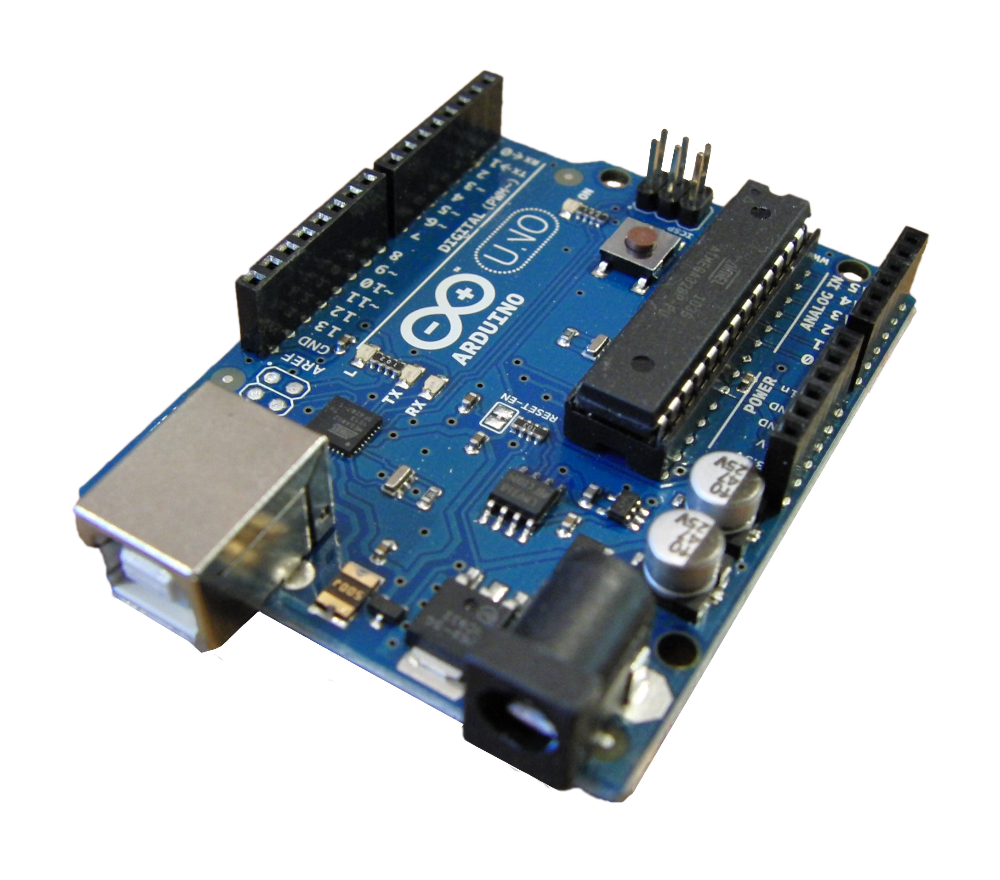
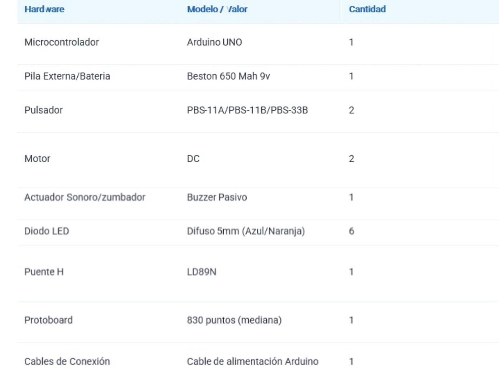
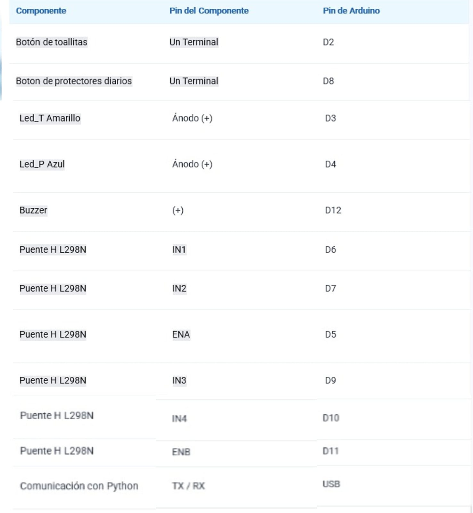
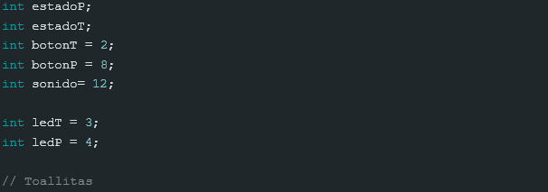
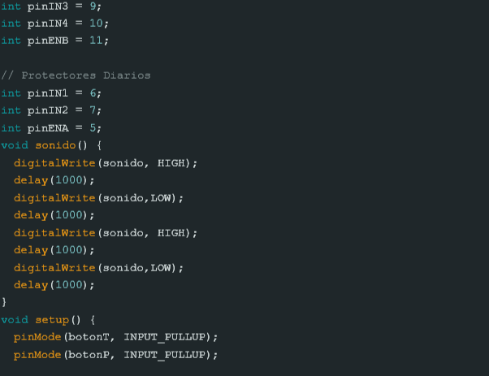
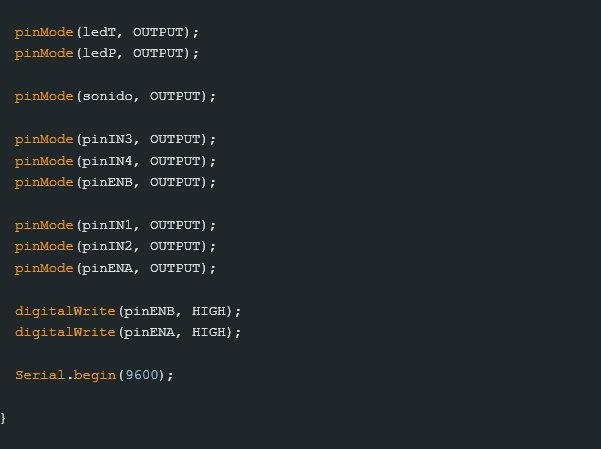
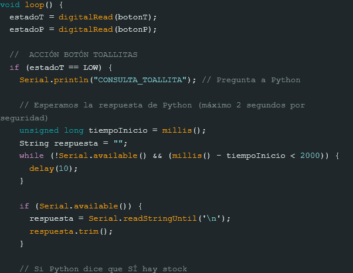
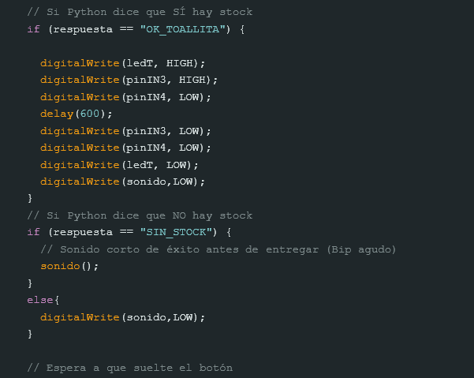
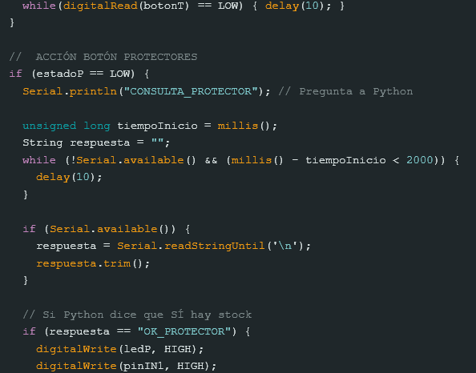
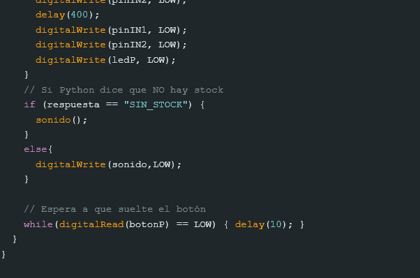

¿QUÉ ES UN ARDUINO?

El Arduino Uno es una placa electrónica programable que sirve para crear proyectos y controlar componentes electrónicos.
En palabras simples, es como una pequeña computadora que vos programás para que haga cosas.
Informe Técnico: Sistema de Control Automatizado
Documentación oficial del proyecto de Programación e Informática.
1. Portada e Introducción
Datos del Proyecto
Proyecto: Máquina Expendedora de Productos de Higiene
Integrantes: Solange Sejas, Macarena Correa,
Natalia Hipólito, Francisco Vazquez, Thiago Pacheco,
Estefania Gretella, Thiago Gómez y Dylan Vallejos.
Curso / Grado: 7mo Programación, 7mo Informática
Materia: Evaluación de Proyectos / Modelos y Sistemas
Ubicación del Laboratorio: E.E.S.T. N.º 1 José Ingenieros
Resumen del Proyecto
El proyecto consiste en el diseño y desarrollo de un prototipo de máquina expendedora automática de productos de higiene femenina, utilizando un Arduino Uno como sistema principal de control.
La máquina está diseñada para permitir que el usuario seleccione un producto mediante botones. Una vez realizada la selección, el Arduino procesa la señal recibida y activa el motor correspondiente, utilizando un módulo puente H para controlar su funcionamiento. El motor acciona un mecanismo que desplaza el producto y permite su salida de manera automática.
El sistema busca ser una propuesta económica, sencilla y funcional, que pueda utilizarse como modelo para facilitar el acceso a productos de higiene femenina en lugares como escuelas, instituciones u otros espacios públicos.
Además, el proyecto permite aplicar conocimientos de programación, electrónica y automatización, integrando componentes de entrada, procesamiento y salida en un mismo sistema. De esta manera, se demuestra cómo una placa Arduino puede utilizarse para desarrollar soluciones tecnológicas destinadas a resolver necesidades de la vida cotidiana.
Objetivos
Objetivo general: Diseñar y desarrollar un prototipo de máquina expendedora automática de productos de higiene femenina, utilizando Arduino, botones y motores, capaz de entregar un producto seleccionado de manera automática, sencilla y controlada.
Objetivos específicos:
- Implementar un Arduino Uno como unidad principal de control del sistema.
- Utilizar botones como medio de interacción entre el usuario y la máquina.
- Programar el Arduino para detectar las diferentes selecciones realizadas.
- Controlar motores de corriente continua mediante módulos puente H.
- Diseñar un mecanismo que permita desplazar y entregar los productos de forma automática.
- Integrar correctamente los componentes electrónicos y la programación para obtener un sistema funcional.
- Aplicar conocimientos de programación, electrónica y automatización en un proyecto práctico.
- Desarrollar una alternativa de bajo costo que facilite el acceso a productos de higiene femenina.
- Comprobar el funcionamiento del prototipo y detectar posibles mejoras para futuras versiones.
2. Requerimientos de Hardware y Software
Componentes de Hardware
La siguiente lista detalla los componentes necesarios para la construcción del circuito.

3. Arquitectura del Hardware (Circuito)
Diagrama de Conexiones
En esta sección se incluye el esquema del circuito realizado en Fritzing o Tinkercad.
Diagrama del circuito: pendiente de insertar.
Tabla de Mapeo de Pines (Pinout)

4. Código de Arduino
A continuación, se presentan las diferentes partes del código utilizado para programar el Arduino y controlar los componentes del proyecto.
Declaración de variables

En esta parte declaramos las variables que vamos a utilizar en el programa. Las variables permiten guardar información, como números o estados de los componentes, para utilizarlos durante la ejecución del código.
Segunda parte del código

En esta parte explicamos las instrucciones que aparecen en el código y cuál es su función dentro del funcionamiento del proyecto.
Tercera parte del código

Aquí explicamos qué hace esta sección del programa y cómo participa en el funcionamiento del circuito.
Cuarta parte del código

En esta sección describimos las instrucciones que se utilizan y qué resultado producen en el proyecto.
Quinta parte del código

Esta parte contiene instrucciones que ayudan a controlar el funcionamiento de los componentes conectados a la placa Arduino.
Sexta parte del código

Aquí explicamos cómo continúa el programa y cómo se relaciona esta sección con las instrucciones anteriores.
Última parte del código

Para finalizar, explicamos las últimas instrucciones y cómo contribuyen al funcionamiento general del proyecto.